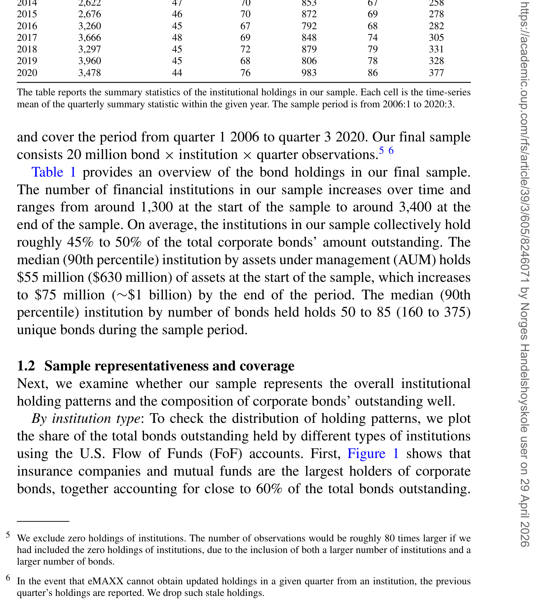
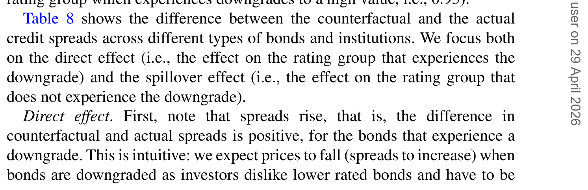
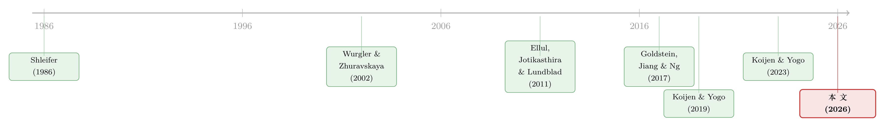

谁在持有这张债券，决定了它的价格
本文读的是 Bretscher, Schmid, Sen & Sharma (2026, Review of Financial Studies)：他们把公司债市场上保险公司、共同基金、ETF 这些「性格迥异」的机构投资者的需求函数，放进一个可估计的均衡需求体系里，发现「谁在持有这张债券」本身就是定价的状态变量——市场层面的总需求弹性大约只有 6，但这个数字掩盖了巨大的分化：共同基金的弹性高达 14，寿险公司却低到 1，ETF 更只有 0.9。机构构成的变迁，会实打实地改写企业的发债成本。
1 一个被「代表性投资者」抹掉的问题
先从一个看似平淡的事实说起。
美国公司债市场是企业最重要的融资渠道之一，存量规模接近 11 万亿美元。但如果你把镜头拉长到几十年的尺度，会看到一幕静悄悄的「权力转移」：曾经的绝对主力——保险公司——所持有的份额在持续萎缩；与此同时，共同基金 (mutual funds) 异军突起，如今握有大约四分之一的存量债券；而被动投资的代表 ETF，也像它们在股票市场里做过的那样，一点点蚕食着这个市场。
这本来不该只是一条「行业结构」新闻。因为这几类机构的禀性截然不同：保险公司和养老金要用资产去匹配长久期的负债，天然是买入并持有 (buy and hold) 的玩家；而共同基金每天都要准备应对赎回，必须时刻保持流动性。性格不同，对价格的反应自然也不同。
于是一个自然的问题浮出水面：投资者构成的这种大迁徙，会不会反过来塑造公司债的价格，从而改变企业的融资成本？
可惜的是，标准的公司债定价模型对这个问题几乎是「失语」的。无论是基于 Leland (1994) 的结构化信用风险模型，还是更晚近的诸多扩展，它们大多站在代表性投资者 (representative investor) 的范式上——市场里仿佛只有一个边际投资者，他的偏好就是市场的偏好。在这套语言里，「是寿险还是共同基金在接盘」这个问题根本无从谈起，因为模型里压根就没有「不同的投资者」这一维度。
这就是本文要补上的那块拼图。
2 把「需求」请回定价桌
那要怎么把这些性格各异的机构请回定价的桌面上？
作者的答案，是接续 Koijen and Yogo (2019a) 重新点燃的需求体系资产定价 (demand system asset pricing) 这条路线。这套方法的精神，是不再去猜测那个虚构的「边际投资者」，而是直接从持仓数据出发，为每一个真实的投资者估计出一条需求曲线——他对收益率有多敏感、偏好什么样的债券特征——再用市场出清把所有人的需求拼成一个均衡价格。
需求体系方法的魅力，恰恰在于它把「价格」从天上拉回地面：价格不再是某个贴现因子的机械产物，而是无数张需求曲线相互推搡、最终在「想买的」等于「在外流通的」那一点上达成的妥协。关于这套思想如何在其他市场里发光，可参见《你卖出时，谁还在场？——把「需求分歧」写进资产定价》与《弱替代：因子动物园是从哪里冒出来的？》。
但公司债市场不是股票市场，直接套用 Koijen-Yogo 是不够的。作者在持仓数据里看到了一个股票市场里没那么显眼的特征——分割 (segmentation)。
数据里有一个触目惊心的事实：绝大多数投资者只玩一边。70% 的寿险公司、83% 的财产险公司、80% 以上的 ETF，只持有投资级 (investment-grade, IG) 债券；高收益 (high-yield, HY) 那一边，他们基本不碰。共同基金和变额年金 (variable annuity, VA) 基金要稍微「跨界」一些（约 60% 同时持有两类），但即便如此，其中三分之一的「专一型」基金反而是只买 HY 的。
换句话说，IG 和 HY 与其说是同一个市场里的两档商品，不如说更像两个部分隔开的池子。一个只买 IG 的寿险公司，并不会因为某只 HY 债券突然变便宜就跑去接盘——它压根不在那个池子里。
这就引出了本文方法上真正关键的一步：把 Koijen-Yogo 的需求体系改造成一个嵌套 (nested) 的版本，用一个「跨评级组的替代弹性」参数，来刻画投资者在 IG 与 HY 之间那种「不完全、甚至相当勉强」的替代关系。
3 模型：一个可估计的嵌套需求体系
下面我们把这套需求体系拆开来看。为了不把行文写成纯数学，我会只点出最关键的几块「积木」，并解释每一步背后的直觉。
第一块：个体需求函数。 对投资者 \(i\) 而言，他持有某只债券 \(n\) 的（相对于「外部选项」\(0\) 的）组合权重，由这只债券的到期收益率与一组特征决定。沿用 Koijen-Yogo 的对数线性形式，可以写成：
这里 \(x_n\) 收纳了一组灵活的债券特征——违约风险、久期、发行规模、流动性等等。这条式子的妙处在于，它把「投资者为什么持有这只债券」拆成了两部分：一部分是对收益率的反应（这决定了弹性），另一部分是对特征的偏好（这决定了他天生爱买什么样的债）。后面我们会看到，正是这两部分的机构间差异，撑起了全文的结论。
第二块：嵌套结构。 现在把分割放进来。设债券被分到评级组 \(g\in\{\text{IG},\text{HY}\}\)，投资者的选择分两层完成——先决定在每个组里买谁，再决定两个组之间怎么分配。记 \(\delta_{i,n}=\beta_{0,i}\,y_n+\beta_i'x_n+\epsilon_{i,n}\) 为债券的「吸引力」，则嵌套需求可写成组内份额与跨组份额的乘积：
$$ w_i(n) \;=\; \frac{\exp(\delta_{i,n}/\lambda)}{\sum_{m\in g}\exp(\delta_{i,m}/\lambda)}\;\times\;\frac{\exp(\lambda\, I_{i,g})}{\sum_{h}\exp(\lambda\, I_{i,h})},\qquad I_{i,g}=\ln\!\sum_{m\in g}\exp(\delta_{i,m}/\lambda) $$
其中 \(I_{i,g}\) 是评级组 \(g\) 的包含值 (inclusive value)，\(\lambda\in(0,1]\) 就是那个核心的替代参数。直觉是这样的：\(\lambda\) 越接近 \(1\)，两个评级组之间替代得越顺畅，市场越「不分割」；\(\lambda\) 越接近 \(0\)，组与组之间的墙越厚，资金越不愿意跨组流动。作者估计出的 \(\lambda\) 大约只有 0.2——这是一道相当结实的墙。
第三块：市场出清。 最后，模型用一个条件闭合：每只债券被所有投资者持有的金额之和，必须等于它在外流通的市值。
$$ \sum_i A_i\, w_i(n) \;=\; M_n $$
这里 \(A_i\) 是投资者 \(i\) 的总资产，\(M_n\) 是债券 \(n\) 的市值（价格乘以流通量）。这一条把价格内生了出来：当某些投资者集体减持，要让市场重新出清，价格（收益率）就必须调整，直到剩下的人愿意把这些债券吃下去。一只债券的「价格冲击」有多大，取决于还在场的是谁、他们有多大胃口——而这，正是全文反复要敲打的那个核心。
4 数据
把模型落到数据上，作者拼接了三个数据库：
- 持仓来自 Thomson Reuters eMAXX，季度频率、CUSIP 层面，覆盖保险公司（寿险与财险）、共同基金、ETF、变额年金等机构的固定收益持仓；作者同时纳入美国库与全球库，因为外资基金持有的份额并不可忽略。
- 价格与收益率来自 WRDS Bond Returns 数据库（底层是 TRACE 成交），月频转季频，取季末最后一笔。
- 债券与发行人特征来自 FISD (Fixed Income Securities Database)。
样本期为 2006:Q1 到 2020:Q3，观测单位是「债券 × 机构 × 季度」，最终约有 2000 万条观测。样本里的机构合计持有全市场 45%–50% 的存量公司债。从表 1 可以看到，机构数量从样本初的约 1,300 家增长到末期的约 3,400 家；按资产规模计，中位数机构持有的债券资产从约 5500 万美元增至期末的约 7500 万美元。作者还逐一核对了样本对全市场的代表性——按机构类型、按评级、按期限的分布，都与美联储资金流量表 (Flow of Funds) 和整体市场高度吻合。

Table 1: provides an overview of the bond holdings in our final sample
5 主要结果：一个总数，五种性格
接下来是全文最精彩的部分。作者一共讲了五个发现，但它们其实都绕着同一个轴在转：总量掩盖了分化，而分化才是定价的关键。
其一，市场层面的总需求弹性只有约 6。 这个数字本身已经很有冲击力——它意味着面对非基本面的资金流出，价格会出现相当可观的下跌，与标准资产定价模型「需求曲线近乎水平」的暗示截然相反。作为对照，作者提到 Petajisto (2009) 那类校准隐含的弹性高达 7,000 以上，比这里高出整整三个数量级。
其二，这个「6」是一锅大杂烩。 一旦拆到机构层面，分化大得惊人：共同基金的平均弹性约为 14，是最「逐价」的一群；而寿险公司只有 1，ETF 更低至 0.9。这个排序其实极有道理——寿险是买入持有型选手，价格涨跌很难撼动它们的配置；ETF 因为要跟踪基准 (benchmarking)，对收益率的变化同样反应迟钝。这种弹性差异还高度持久，并不随市场状况大起大落。在代表性投资者的框架里，你根本写不出这样一个「同一市场、五种弹性」的世界。
其三，同一类机构内部，IG 比 HY 更有弹性。 以共同基金为例，IG 的平均弹性约 18，HY 却只有 6。作者给了两种解读：要么是 HY 的做市商库存摩擦更重、更难交易；要么是两只 HY 债券彼此之间本就不如两只 IG 债券那样可替代（因为 HY 对现金流风险的暴露更高）。更一般地，一旦允许灵活的跨组替代结构（即承认市场是分割的），估出来的弹性会系统性地变高——这与「越是有近似替代品的资产，需求越有弹性」的经典直觉一脉相承 (Wurgler and Zhuravskaya, 2002)。
其四，偏好被从持仓里「分离」了出来。 需求体系最值钱的地方，是它能把「投资者天生爱买什么」从「他均衡时恰好持有了什么」中剥离开。结果是：寿险偏好长久期、流动性差、发行规模小的债券；共同基金的偏好恰好相反；而 ETF 几乎只在乎一件事——发行规模，偏爱大盘债。
其五，需求冲击的价格影响平均很大，且 HY 高于 IG。 对债券层面的负向需求冲击做模拟，价格冲击在横截面上从 5% 到 30% 不等，HY 普遍更高（因为 HY 的需求更缺乏弹性）。作者还做了一个分解，发现这种横截面差异主要来自机构类型之间的需求参数差异（保险 vs. 基金 vs. ETF），而非同一类机构内部的差异。
6 反事实：当主力换人，企业的账单怎么变
到这里，需求体系还只是一面「镜子」，照出了市场此刻的样子。但真正关键的一步，是把它当成一台「沙盘推演机」——既然每个人的需求曲线都估出来了，那就可以问：如果投资者构成变了，均衡价格会怎么走？
作者推演了几个最贴近现实的情景，结论相当有戏剧性：
- 共同基金的崛起，显著压低了信用利差，尤其是短久期和 HY 债券的利差。道理顺着前面的偏好估计就能讲通：共同基金天生更偏爱这类债券，更愿意持有它们；若把它们让给以保险为主的其他投资者，后者只肯在高得多的利差下才接盘。
- ETF 的崛起方向相反。 ETF 通常被动跟踪 IG 基准，它的扩张意味着资金从共同基金那里被抽走，而这会不成比例地削减对高风险债券的需求，压低其价格、推高其利差。于是被动化反而抬高了风险发行人的相对融资成本。
- 大额赎回的杀伤力，取决于「谁在流出、谁来接盘」。 同样规模的赎回，发生在 ETF 比发生在共同基金的威胁要小；而最终价格冲击有多大，关键看接盘者的偏好与流出者有多像——越像，价格扰动越小。一个直接含义是：当赎回是局部的而非全市场的，如果场内有大量偏好相近的机构，它们愿意以较低的补偿吃下抛盘，价格错位就小。
- 市场分割会放大危机中的错位。 当信用质量全面恶化（如危机时），更分割的市场会显著抑制资金流向 HY 组，于是 HY 的价格错位比 IG 更严重。

Table 8: shows the difference between the counterfactual and the actual
这些反事实的共同主题，归根结底只有一句话：机构需求的「构成」，是公司债定价的一个状态变量。 同一只债券，握在不同人手里，均衡价格就不一样。这正是对代表性投资者范式最直接的反驳。
7 文献脉络
把这篇论文放回它所在的坐标系，能更清楚地看出它的位置。
最上游，是 Shleifer (1986) 那个朴素却深刻的观察——需求曲线是向下倾斜的，资产并非有无穷多的完美替代品；Wurgler and Zhuravskaya (2002) 进一步指出，替代品越近，需求越有弹性。这条「需求侧」的暗流，在很长一段时间里都活在主流定价范式的阴影下。
接着，是一支研究特定机构如何搅动债券价格的文献。Ellul, Jotikasthira, and Lundblad (2011) 记录了保险公司在债券被降级后的「监管驱动型抛售」如何造成价格错位；Goldstein, Jiang, and Ng (2017) 则发现债券基金在持有更多流动性差资产时，资金流出对负业绩更敏感，暗示着挤兑式的「支付互补性」。这条线把「机构行为 → 价格」讲得很细，但往往一次只盯住一类机构。
然后，真正的范式转折来自 Koijen and Yogo (2019a)：他们把整套需求体系方法系统化，让「从持仓估需求、用出清定价格」成为可操作的工具。随后 Koijen and Yogo (2023) 专门转向公司债，开始理解其所有权结构；Chaudhary, Fu, and Li (2023) 强调了「替代品很重要」这一与本文呼应的关键点。

本文 (2026) 的落点，正是把上面两条线焊在一起：它既继承了需求体系的均衡框架，又把「不同机构性格迥异」这件被特定机构文献反复强调的事，用一个可估计的嵌套结构一次性地、联合地塞进同一个模型里。相比以往「一次只评估一个部门」的做法，它能让所有投资者的均衡反应同时被纳入考量——这是它最实在的方法论贡献。
顺带一提，公司债定价的「另一条腿」是收益率的可预测性。关于如何用可解释的机器学习去拆解公司债收益率，可参见《把机器学习的黑箱拆成玻璃箱：公司债收益率能被「看懂」地预测吗？》；而保险公司在低利率时代的「逐利」行为如何重塑了信用市场，则可参见《利率长跌二十年，如何亲手喂大了影子银行》。
8 评论与延伸（Q&A + 研究方向）
(a) 几个可能的疑问
Q：需求体系方法最大的软肋是识别——价格和需求互为因果，作者凭什么说估出来的弹性是「真」弹性？
这正是这套方法的命门。Koijen-Yogo 一脉的标准做法是用「投资者的投资范围 (investment universe) / 资产规模」一类与价格外生的变量来构造工具，把需求曲线从供给侧的扰动中识别出来。本文承袭这一思路并辅以丰富的持仓微观结构。但读者要清醒：识别的可信度，最终系于「潜在偏好 \(\epsilon_{i,n}\) 与工具不相关」这条排他性假设——它无法被直接检验，只能靠经济学论证去支撑。
Q：把 IG/HY 之间的替代参数估成 0.2，会不会只是「机构本来就只准买 IG」这种制度约束的伪装，而非真实偏好？
这个担心很对路。寿险的资本金监管、基金的招募说明书条款，都会把投资者「钉」在某一评级组里。模型估出的低替代，确实可能混合了「不愿替代」（偏好）与「不能替代」（约束）两种力量。作者的框架更像是把这两者打包成了一个简约式 (reduced-form) 的替代参数，而没有把监管约束显式结构化——这是解读
0.2时要保留的一份谨慎。
Q：总弹性「6」听起来很低，但它和股票市场里那个著名的「微观弹性约 1」是一回事吗？
不完全是。股票需求体系里常被引用的低弹性，是针对单只股票的微观弹性；本文的「6」是市场层面的总弹性，二者口径不同，不宜直接对比。但精神是一致的：现实中的需求远比标准模型假设的要陡峭，非基本面的资金流动足以撼动价格。
Q：为什么 ETF 的弹性（0.9）比寿险（1）还低？被动基金不是「应该」更机械地跟随价格吗？
恰恰因为「机械」。ETF 跟踪基准，它的持仓由指数规则决定，而非由收益率高低驱动——收益率涨了它也不会因此多买或少买。所以从「对收益率变化的反应」这个口径看，被动反而意味着低弹性。这也解释了为什么 ETF 扩张会抬高风险发行人的相对融资成本。
Q：样本到 2020:Q3 为止，恰好罩住了 COVID 那一季。这会不会让弹性估计被危机污染？
这是双刃剑。危机季提供了宝贵的大幅需求冲击，有助于识别弹性；但也可能让估计被一次极端事件主导。作者强调弹性差异「高度持久、不随市场状况大幅变化」，这在一定程度上缓解了担忧，但稳健性上仍值得读者盯一眼分样本结果。
Q：这套模型对「外资持有人」着墨多吗？
作者明确把全球 eMAXX 纳入，因为外资基金持有的份额不可忽略。但本文的机构分类主轴是「保险 vs. 基金 vs. ETF」，外资并未被单列为一个有独立需求参数的部门。这恰恰留下了一个诱人的缺口（见下）。
(b) 几个可能的研究问题与提案
1. 外资持有人是不是公司债市场里「最特别的一种性格」？
【经济故事】本文把投资者按「保险/基金/ETF」分组，但外资机构面临汇率对冲成本、母国监管、本国基准等一整套独有约束，其需求弹性与偏好很可能自成一格。若外资在某些评级组里是边际投资者，那么汇率与全球利率的扰动会通过它们的需求曲线传导到美国企业的融资成本上。
【可行性】中。eMAXX 的全球库已经把外资持仓摆在桌上，把它从现有部门里拆出来、单独估一组需求参数在技术上完全 doable；难点在识别——需要一个只打外资、不打本土投资者的需求工具（如母国监管变动或对冲成本冲击）。
2. 评级跨档（fallen angels）时，需求体系能不能预测价格错位的大小？
【经济故事】当一只债券从 IG 跌入 HY，它瞬间从一个「池子」掉进另一个——而两个池子的接盘者性格完全不同。本文估出的低替代参数
0.2直接预言：这种强制再配置会造成可观的价格错位。把模型的事前预测与真实降级事件的事后价格反应对照，是对模型的一次干净的样本外检验。【可行性】高。FISD 有完整的评级历史，TRACE/WRDS 有价格，降级事件本身提供了准自然实验。这几乎是把本文的反事实机器直接拿去做事件研究，识别也相对干净。
3. 把做市商的库存摩擦显式接进需求体系。
【经济故事】本文对「HY 弹性更低」给了两种解读，其一就是做市商库存摩擦。但模型本身没有显式的中介部门。若把交易商的风险承受能力作为一层「中介需求」嵌进来，就能区分「投资者不愿买」与「中间商不肯做市」这两种截然不同的低弹性来源。
【可行性】中。交易商库存可由 TRACE 的交易方向部分推断，但要把中介层结构化并与投资者层联合估计，工程量不小。相关直觉可参考《无风险市场里的风险厌恶：是谁给做市商系上了「风险限额」这根绳》。
4. 流动性偏好的异质性与「流动性中性」幻觉。
【经济故事】本文发现寿险偏好流动性差的债券、基金偏好流动性好的债券。那么一个跨机构的「流动性需求」错配，会不会在流动性冲击时制造出可预测的横截面价格模式？这把需求体系与流动性定价两条线接了起来。
【可行性】中。需要可靠的债券流动性度量（如 Dick-Nielsen-Feldhütter-Lando 类指标），数据可得；难点是把流动性偏好与久期、违约风险偏好干净地分离开，避免共线性。
9 我的判断
这篇论文最让我欣赏的，是它的雄心与克制之间的平衡。雄心在于：它没有满足于「某类机构会搅动价格」这种局部叙事，而是把全市场的主要玩家一次性塞进一个能出清的均衡里，从而第一次能回答「机构构成变迁如何改写企业融资成本」这种总量问题。克制在于：面对公司债市场的复杂，它没有去堆砌一个无法估计的庞然大物，而是用一个嵌套结构这样经济、可估计的设计，恰好抓住了「分割」这一最要紧的特征。λ ≈ 0.2、共同基金弹性 14 而寿险 1、价格冲击 5%–30%——这些数字本身就是这条文献此前缺失的「基准刻度」。
我的保留意见集中在识别。需求体系方法的全部说服力，最终都压在工具变量的排他性假设上，而这条假设在公司债这种交易稀疏、价格本就由 TRACE 成交「点状」拼出的市场里，比在股票市场更难站稳脚跟。低替代参数究竟有多少是「偏好」、多少是「监管约束」，模型也没有给出干净的切分——而这对政策含义至关重要：如果 0.2 主要来自监管，那么放松资本金规则就能让市场不那么分割；如果它来自深层偏好，那政策再怎么使劲也搬不动这堵墙。
后续我最想看到的，是把这台「沙盘推演机」推到样本外去检验——拿真实发生过的降级潮、赎回潮，对照模型的事前预测，看它到底准不准。一个能被证伪的反事实，远比一个只能自洽的反事实更有分量。
参考文献
- Becker, B., and V. Ivashina (2015). Reaching for yield in the bond market. The Journal of Finance 70(5), 1863–1902.
- Chaudhary, M., Z. Fu, and J. Li (2023). Corporate bond multipliers: Substitutes matter. Working Paper, Columbia.
- Ellul, A., C. Jotikasthira, and C. T. Lundblad (2011). Regulatory pressure and fire sales in the corporate bond market. Journal of Financial Economics 101(3), 596–620.
- Goldstein, I., H. Jiang, and D. T. Ng (2017). Investor flows and fragility in corporate bond funds. Journal of Financial Economics 126(3), 592–613.
- Koijen, R. S., and M. Yogo (2019a). A demand system approach to asset pricing. Journal of Political Economy 127(4), 1475–1515.
- Koijen, R. S., and M. Yogo (2023). Understanding the ownership structure of corporate bonds. American Economic Review: Insights 5(1), 73–92.
- Leland, H. E. (1994). Corporate debt value, bond covenants, and optimal capital structure. The Journal of Finance 49(4), 1213–1252.
- Shleifer, A. (1986). Do demand curves for stocks slope down? The Journal of Finance 41(3), 579–590.
- Wurgler, J., and E. Zhuravskaya (2002). Does arbitrage flatten demand curves for stocks? The Journal of Business 75(4), 583–608.